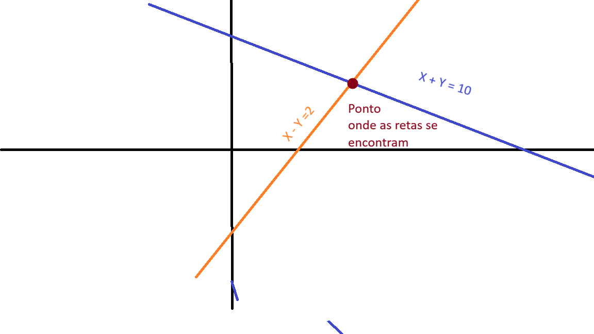

São representações de conjuntos de equações com mais de uma incógnita(letra).
Juntos Maria e João tem 10 mangas, porem a diferença entre quantas mangas cada um tem é 2. Quantas mangas tem cada um? |x + y = 10 |x - y = 2
1) Isola uma das variaveis e substitui o valor encontrado na outra equação. 2) Substitui na outra |x + y = 10 |x - y = 2 Isolando x na segunda equação, temos x = y + 2 Substituindo na primeira equação, temos (y + 2) + y = 10 => 2y + 2 = 10 => 2y = 8 => y = 4 Substituindo o valor de y na equação x = y + 2, temos x = 4 + 2 => x = 6
Neste método, somamos ou subtraímos as equações para eliminar uma das variáveis. |x + y = 10 |x - y = 2 Como na equação y ja esta negativo, podemos somar as duas e eliminar y. Depois de descobrir o valor de x, escolha a mais facil e substitua o valor de x para descobrir o valor de y. 2x = 12 => x = 6 |x + y = 10 |x - y = 2 6 + y = 10 => y = 4
Cada equação pode ser interpretada como uma reta. Assim solução pode ser encontrada no ponto onde as retas se cruzam. Nesse caso no ponto (6,4) onde x = 6 e y = 4
